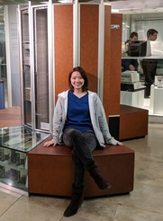

Yuka Takahashi is an associate member at CERN
and a junior student at Department of Information Science,
Science and Technology,
University of Tokyo.
She is in Science Building No.7,
Department of Computer Science,
Graduate School of Information
Science and Technology,
University of Tokyo,
7-3-1 Hongo, Bunkyo-ku,
Tokyo 113-8656, JAPAN.
TEL: +81-80-2139-7587 (Mobile phone)
E-mail(University): yukatkh at is.s.u-tokyo.ac.jp
E-mail(CERN): yuka.takahashi at cern.ch
Twitter: at 00_
Last update: January 2018